EKF Linearized Error-State System
When developing an extended Kalman filter (EKF), one needs to linearize the nonlinear motion and measurement models about some linearization point. This linearization is one of the sources of error causing inaccuracies in the estimates (in addition to, for exmaple, model errors and measurement noise). Let us consider the following linearized error-state visual-inertial system:
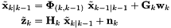
where the state contains the inertial navigation state and a single environmental feature (noting that we do not include biases to simplify the derivations):
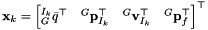
Note that we use the left quaternion error state (see [Indirect Kalman Filter for 3D Attitude Estimation] [22] for details). For simplicity we assume that the camera and IMU frame have an identity transform. We can compute the measurement Jacobian of a given feature based on the perspective projection camera model at the k-th timestep as follows:
![\begin{align*} \mathbf{H}_{k} &= \mathbf H_{proj,k}~\mathbf H_{state,k} \\ &= \begin{bmatrix} \frac{1}{{}^Iz} & 0 & \frac{-{}^Ix}{({}^Iz)^2} \\ 0 & \frac{1}{{}^Iz} & \frac{-{}^Iy}{({}^Iz)^2} \\ \end{bmatrix} \begin{bmatrix} \lfloor {}^{I_k}_{G}\mathbf{R}({}^{G}\mathbf{p}_f-{}^{G}\mathbf{p}_{I_k}) \times\rfloor & -{}^{I_k}_{G}\mathbf{R} & \mathbf 0_{3\times3} & {}^{I_k}_{G}\mathbf{R} \end{bmatrix} \\ &= \mathbf H_{proj,k}~ {}^{I_k}_{G}\mathbf{R} \begin{bmatrix} \lfloor ({}^{G}\mathbf{p}_f-{}^{G}\mathbf{p}_{I_k}) \times\rfloor {}^{I_k}_{G}\mathbf{R}^\top & -\mathbf I_{3\times3} & \mathbf 0_{3\times3} & \mathbf I_{3\times3} \end{bmatrix} \end{align*}](form_16.png)
The state-transition (or system Jacobian) matrix from timestep k-1 to k as (see [IMU Propagation Derivations] for more details):
![\begin{align*} \mathbf{\Phi}_{(k,k-1)}&= \begin{bmatrix} {}^{I_{k}}_{I_{k-1}}\mathbf R & \mathbf 0_{3\times3} & \mathbf 0_{3\times3} & \mathbf 0_{3\times3} \\[1em] \empty -{}^{I_{k-1}}_{G}\mathbf{R}^\top \lfloor \boldsymbol\alpha(k,k-1) \times\rfloor & \mathbf I_{3\times3} & (t_{k}-t_{k-1})\mathbf I_{3\times3} & \mathbf 0_{3\times3} \\[1em] \empty -{}^{I_{k-1}}_{G}\mathbf{R}^\top \lfloor \boldsymbol\beta(k,k-1) \times\rfloor & \mathbf 0_{3\times3} & \mathbf I_{3\times3} & \mathbf 0_{3\times3} \\[1em] \empty \mathbf 0_{3\times3} & \mathbf 0_{3\times3} & \mathbf 0_{3\times3} & \mathbf I_{3\times3} \end{bmatrix} \\[2em] \boldsymbol\alpha(k,k-1) &= \int_{t_{k-1}}^{k} \int_{t_{k-1}}^{s} {}^{I_{k-1}}_{\tau}\mathbf R (\mathbf a(\tau)-\mathbf b_a - \mathbf w_a) d\tau ds \\ \boldsymbol\beta(k,k-1) &= \int_{t_{k-1}}^{t_k} {}^{I_{k-1}}_{\tau}\mathbf R (\mathbf a(\tau)-\mathbf b_a - \mathbf w_a) d\tau \end{align*}](form_17.png)
where 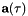 is the true acceleration at time  , 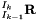 is computed using the gyroscope angular velocity measurements, and 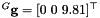 is gravity in the global frame of reference. During propagation one would need to solve these integrals using either analytical or numerical integration, while we here are interested in how the state evolves in order to examine its observability.
, 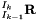 is computed using the gyroscope angular velocity measurements, and 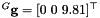 is gravity in the global frame of reference. During propagation one would need to solve these integrals using either analytical or numerical integration, while we here are interested in how the state evolves in order to examine its observability.
Linearized System Observability
The observability matrix of this linearized system is defined by:
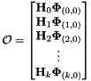
where  is the measurement Jacobian at timestep k and is the compounded state transition (system Jacobian) matrix from timestep 0 to k. For a given block row of this matrix, we have:
is the measurement Jacobian at timestep k and is the compounded state transition (system Jacobian) matrix from timestep 0 to k. For a given block row of this matrix, we have:
![\begin{align*} \mathbf{H}_{k}\mathbf{\Phi}_{(k,0)} &= \empty \mathbf H_{proj,k}~ {}^{I_k}_{G}\mathbf{R} \begin{bmatrix} \boldsymbol\Gamma_1 & \boldsymbol\Gamma_2 & \boldsymbol\Gamma_3 & \boldsymbol\Gamma_4 \end{bmatrix} \\[2em] \empty \empty \boldsymbol\Gamma_1 &= \Big\lfloor \Big({}^{G}\mathbf{p}_f-{}^{G}\mathbf{p}_{I_k} + {}^{I_{0}}_{G}\mathbf{R}^\top \boldsymbol\alpha(k,0) \Big) \times\Big\rfloor {}^{I_0}_{G}\mathbf{R}^\top \\ &= \Big\lfloor \Big({}^{G}\mathbf{p}_f- {}^{G}\mathbf{p}_{I_0}-{}^{G}\mathbf{v}_{I_0}(t_k-t_0)-\frac{1}{2}{}^G\mathbf{g}(t_k-t_0)^2 \Big) \times\Big\rfloor {}^{I_0}_{G}\mathbf{R}^\top \\ \boldsymbol\Gamma_2 &= -\mathbf I_{3\times3} \\ \boldsymbol\Gamma_3 &= -(t_{k}-t_0) \mathbf I_{3\times3} \\ \boldsymbol\Gamma_4 &= \mathbf I_{3\times3} \end{align*}](form_25.png)
We now verify the following nullspace which corresponds to the global yaw about gravity and global IMU and feature positions:
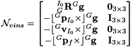
It is not difficult to verify that 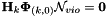. Thus this is a nullspace of the system, which clearly shows that there are the four unobserable directions (global yaw and position) of visual-inertial systems.
First Estimate Jacobians
The main idea of First-Estimate Jacobains (FEJ) approaches is to ensure that the state transition and Jacobian matrices are evaluated at correct linearization points such that the above observability analysis will hold true. For those interested in the technical details please take a look at: [8] and [13]. Let us first consider a small thought experiment of how the standard Kalman filter computes its state transition matrix. From a timestep zero to one it will use the current estimates from state zero forward in time. At the next timestep after it updates the state with measurements from other sensors, it will compute the state transition with the updated values to evolve the state to timestep two. This causes a miss-match in the "continuity" of the state transition matrix which when multiply sequentially should represent the evolution from time zero to time two.
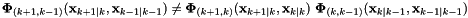
As shown above, we wish to compute the state transition matrix from the k-1 timestep given all k-1 measurements up until the current propagated timestep k+1 given all k measurements. The right side of the above equation is how one would normally perform this in a Kalman filter framework. 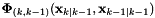 corresponds to propagating from the k-1 update time to the k timestep. One would then normally perform the k'th update to the state and then propagate from this updated state to the newest timestep (i.e. the state transition matrix). This clearly is different then if one was to compute the state transition from time k-1 to the k+1 timestep as the second state transition is evaluated at the different 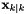 linearization point! To fix this, we can change the linearization point we evaluate these at:
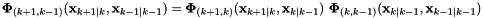
We also need to ensure that our measurement Jacobians match the linearization point of the state transition matrix. Thus they also need to be evaluated at the 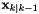 linearization point instead of the that one would normally use. This gives way to the name FEJ since we will evaluate the Jacobians at the same linearization point to ensure that the nullspace remains valid. For example if we evaluated the 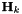 Jacobian with a different 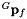 at each timestep then the nullspace would not hold past the first time instance.